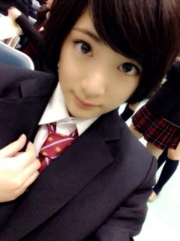

| 2014/03 15 Sat | 生駒里奈 高校卒業！ |
実は今日高校の卒業式でした！
もうJKブランドは使えない〜㌆㌆㌆㌆｡ﾟ(ﾟ´Д｀ﾟ)ﾟ｡㌆㌆㌆㌆
この三年間を振りかえってみました。
秋田の高校は
４月から夏休み明けまで通いました。
私の人生は夏休み明けから変わりました。
その短い秋田での高校生活。
受験して、将来何になりたいかってまだ定まってなかったから。
保育士になりたいって思っている自分もいたからとりあえず勉強頑張ろうって思ってたな〜(＾∀＾)
勉強苦手だけどきっと頑張ってたはずさっ！笑
中学からの友達といつも一緒にいた！
高校で出来た友達もいるっ！
趣味が合うんだ！
今もメールとかしてるよ〜(＾∀＾)
髪の毛がベリーショートで、黒縁メガネで、スカートを履いてなかったら完全にシャキイズムの男の子生駒ちゃんだよっ！
すっごい地味だったな〜笑笑
部活入ってなかったから学校終わったら家に直帰(＾∀＾)
だがしかしっ！
ジャズダンスを習っていたのでダンスをする時だけは輝きスイッチをONにしてた気がする(＾∀＾)
そして上京！
初めて親元を離れての生活。
初めてストレスというものを感じました。
何かというと、口内炎が口の中にいっぱい出来て、それが喉まで広がったヽ(・∀・)ﾉ
ご飯食べてる時、何かおかしいな〜って思ってね。
でも鏡で確認するとか、病院行くっていう発想がなかった！
それだけ上京というものが恐ろしかった！
デビューしまして、センターに選んで頂き。
そのセンターというポジションがどれだけ私にいろんな事を教えてくれたか。
まだ学んでいる最中だけど、それがあったから今こうして活動出来ていると思います。
通信制ですので、まぁあまり学校に行くって機会がありませんでしたが、学校で机に座って勉強するという大切さを教えてもらいました。
先生方にはいろんな事を教えて頂きました。
ちゃんと高校生として接して下さいました。
乃木坂46じゃなくて、学校の私にして下さった。
時々、ふと思いました。
秋田の高校で過ごしていたらって。
勉強して、ダンスして、親友とコスプレしたり、遊びに行ったり。。。
ちょっとぽっかり心に穴が空いてしまいました。
でも今、
全然後悔してないです。
後悔という言葉は違うと思いますが、
ちゃんと学校行って、先生に教えてもらって、東京の学校でも友達が出来て！
乃木坂46を皆で頑張って。
素晴らしい高校3年間を過ごしました！
高1の時の私を褒めたい。
よく決断したねって。
その決断は間違いじゃなかったと言いたい。
ゆうて、まだまだこれからですがっ！
社会人になります。
自分で決断して責任を持って動く時が増えます。
新たなスタート。
この1年。
きっとものすごく大変だと思うけど、でもそれは今しか出来ないし。
今
高1の時の私を褒めた様に。
二十歳になった時にまた自分を褒められる様に頑張りたい！
未来に繋がる様に私は頑張る！
お父さん。
お母さん。
乃木坂46になるって決めて、
上京する時、沢山心配かけちゃったよね。
私だけじゃなくて、
お父さんとお母さんと弟も、親戚も。
今までの生活からぐるっと全然違う生活にしてしまったね。
お父さんもお母さんもすごく戸惑ったと思うのに、転校の事とか、気持ちが辛くて訳わからなくなった時も、ずっと支えて下さいました。
今日無事高校卒業したよ。
3年間本当にありがとうございました。
まだまだお世話になりますが、これからは私も社会人として自分で生きていかなければいけません。
見守っててください。
いつか絶対出世払いでお家プレゼントするっ！
きっと笑
そして
いつも支えてくださるいこまふぁむの皆様。
こんな私を応援して下さってありがとうございます。
握手会などでかけて下さる言葉や、コメントにいつも助けてもらっています。
もっともっとキラキラ輝く人になって、見ていて楽しいって、笑顔になれるって言ってもらえるように頑張ります！
だから見捨てないでね(；д；)
さぁ。
新しいスタートをきりました。
私は進む。
じゃあねっ！

へばなっ！☆